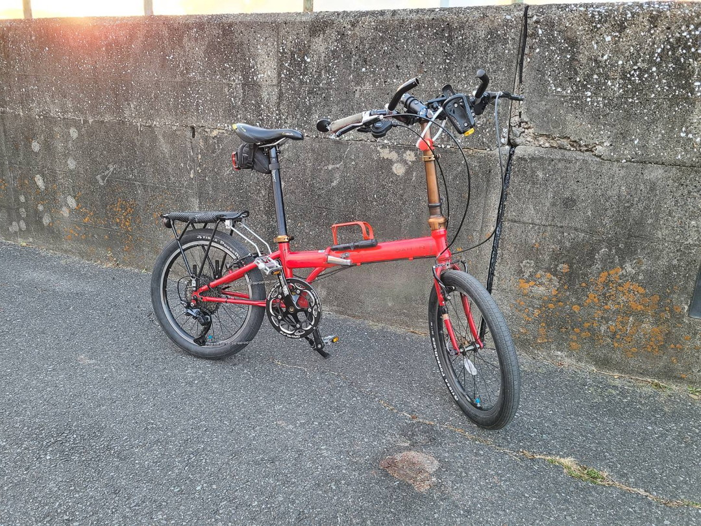
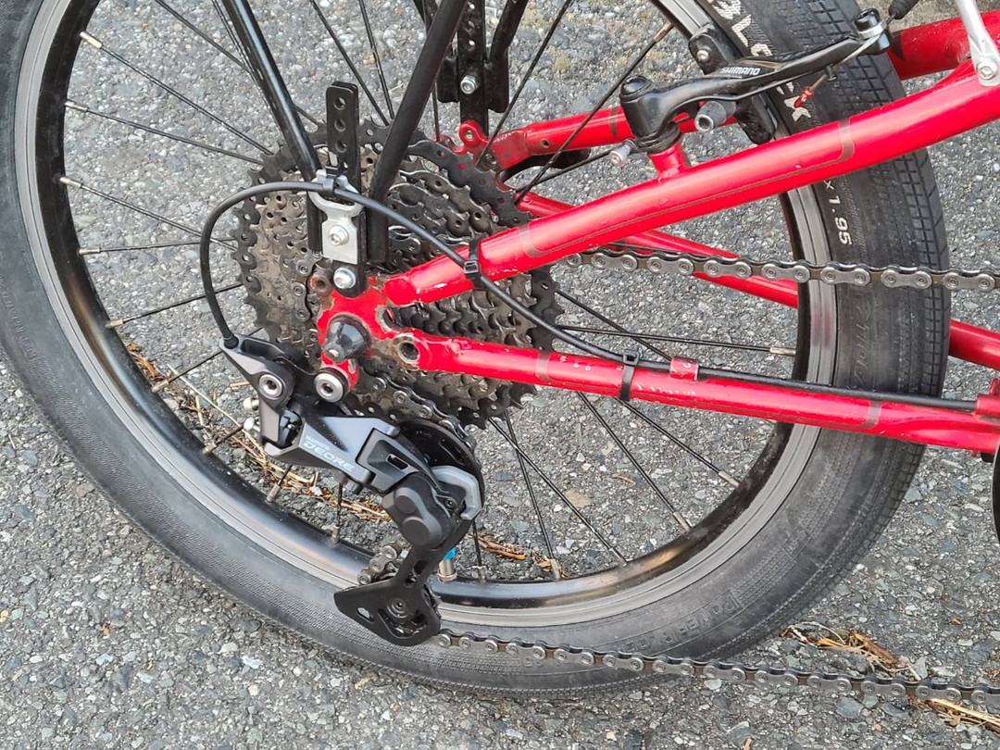
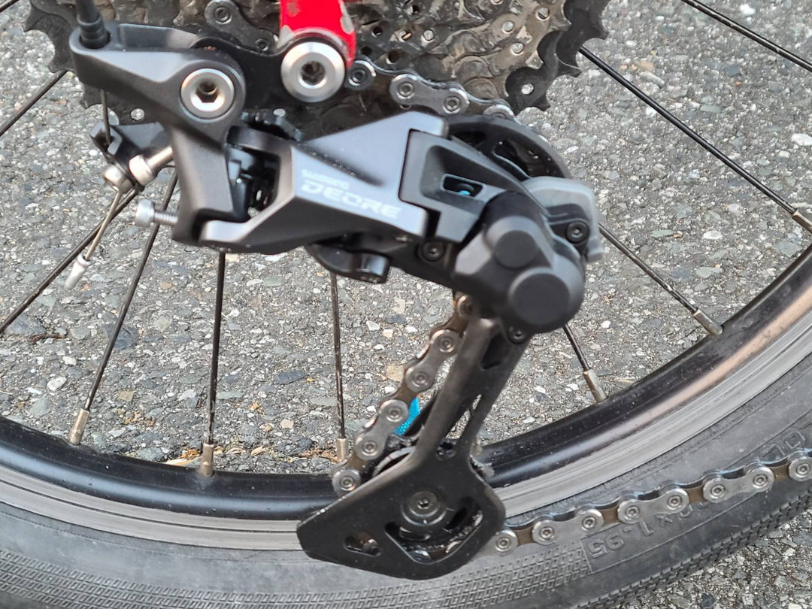

負けたのか……俺が？
はい。なんかいまいち結局シフト調整がうまくいかなかった。一応変速調整はできるがどんどんずれていく。まあそれだけなら問題ないがトップ側の変速がすごく遅い。さすがに無理があったか。これでは実用的とは言えないなぁと思いながらも2ヶ月間は運用していた。
とかやってたらまたチェーンが切れた。
前回の記事で軽く触れたが年末にも一度切れている。この時は適当に継ぎ足したのが原因だと思ったがどうも違うようだ。検証しようにも今回は交差点で切れたので回収ができなかった。しかし継ぎ足した部分は切ったし原因はもっと別のところだろう。おい、チェーン切れた pic.twitter.com/JQWmTYqE6I
— わくせい (@ADlGCrQjlnyDKCg) January 27, 2023
不要だったロースペーサーが原因か、それともアルタスのプーリーケージが42Tに対応できていないのか、チェーンラインがきつかったか？トルクをかけすぎたのだろうか。それとも変速不調で疲労していたのか。ナローワイドも原因かもしれない。ただ、8sのときはこんなに短期間で切れなかったので違うか（チェーンの厚みでカバーされていた説もある）。要因を挙げればキリがないがとりあえず純正環境に近い形で運用することで原因を探ってみることにした。
ということでインストール

前回に比べてフロント部分がスッキリした。あと冬の中わざわざキャリア使って出かけることもなかったのでフロントバスケット機構は外した。


そして今回の目玉。あんまりミニベロにロングケージのMTBコンポを取り付けてる話を聞かなかったのでつけられるか不安だったがどうにかついた。
正直地面に擦るよりも20x1.95サイズのタイヤとケージが干渉しないか不安になったが大丈夫そうだ。(TernのDeore搭載モデルは451の細いタイヤだったりするので気がかりだった)
ローに入れたときのチェーンラインはだいぶ無理があるような気もするがとりあえずこれで運用してみることにする。
前々から言ってるけど42Tもいらんのだけどな……特にこの時期は11-32Tですらいらない。いっそ11-28Tにしてやろうか迷ったけど最近は街乗りしかしてないのでそれすら不要なのかもしれない。ということで一旦スプロケットは現状維持。
インプレ
当たり前だがAltusに無理やり11-42Tを引かせるより全然いい。まだ初期のびを気にしないといけない段階だが変速もいい感じだ。特にトップ側がぜんぜん違う。GRXの変速動画を見ても思ったがやはりワイドレシオに対応させるにはプーリーケージが割りと重要なのかもしれない。
今まではトップに入れたときの巻取りが足りなかったのだろうか。そうすると可動範囲も影響があるのかもしれん。E-bike用GSのRD-M5130も試してみたいものだ。
現状42T以上のスプロケットを導入することはない（というか物理的に難しそう）なので5130のほうがいいんだけどなぁ。単体売りはしてないようだ。残念。
おまけ：ダイナシスを勘違いしていた
この記事でダイナシスがどうのこうの言っていたが完全に勘違い発言だった。まだまだ詳しいことはわかっていないがシマノ公式ページの説明によればダイナシスはフロントトリプル時代にスムーズな変速を実現させるためのテクノロジーとして運用されていた。ダイナシス11もフロントダブルでの変速性能の話をしている。つまりシャドーディレーラーやら引き量やらシングルテンションというのはダイナシスとは直接関係のない技術になる。その証拠に現在フロントシングルになったMTBコンポのテクノロジー一覧からダイナシスは消えている。時代背景から適当に考察するとMTBはフロントトリプル、ロードはダブルで用途が分岐して10s用にMTBはあらゆる技術を見直して調整したのではないか、それで引き量もついでに見直しただけなのではないかと勝手に思っている。それが今度はスプロケットの多段化によって両者ともフロントシングル/ダブルが主流になった。引き量の互換が切れたのはその名残でしかない。ダイナシスは消滅。とかそういうことかもしれない。現に近年はSTIで引けるMTBライクなUltegra RXやGRXが登場したのもあり、シフターの引き量が変速に影響しないという材料になっている。（これに関しては技術が成熟したからなのかもしれないけど）そもそもDiが主戦場になりつつあることを考えると引き量がどうのこうのとかそういう時代ではないのかもしれない。……まあ自分自身は充電めんどくさいし金ないからDiコンポには縁がない人間のままだろうけど。
ではまた～。